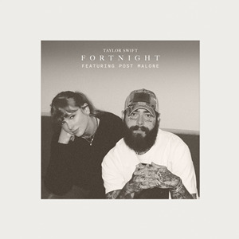

Welcome to a dedicated web page celebrating the lead single from Taylor Swift's album, The Tortured Poets Department.

"Fortnight" features Post Malone and blends synth-pop elements with melancholic storytelling.
A "fortnight" means a period of two weeks. The song tells the story of a brief, intense, and short-lived relationship that felt like forever while it lasted, but left a lasting emotional impact long after it ended. It explores themes of heartbreak, longing, and the feeling of looking back on someone who deeply influenced your life in a short amount of time.